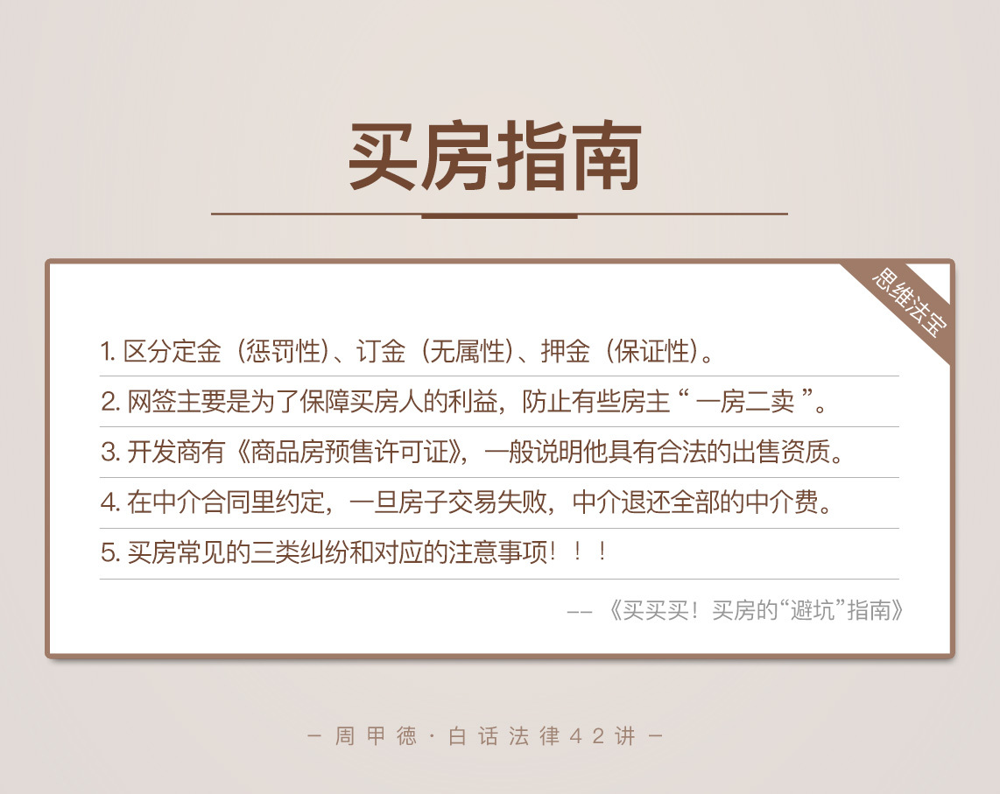

- 00 开篇词 这年头，你真应该懂点法律常识.md.html
- 01 “老周，我想知道” 常见法律认知盲区（一）.md.html
- 02 “老周，我想知道” 律师就在你身边（二）.md.html
- 03 “老周，我想知道” 律师就在你身边（三）.md.html
- 04 “老周，我想知道” 律师就在你身边（四）.md.html
- 05 创业未捷老板跑，社保工资哪里讨？.md.html
- 06 保密还是“卖身”，霸王条款怎么看？.md.html
- 07 编造流言蹭热度？看守所里降温度！.md.html
- 08 合同在手欠款难收，报警有用吗？.md.html
- 09 致创业：谁动了我的股权？.md.html
- 10 又见猝死！工“殇”究竟是不是工伤？.md.html
- 11 期权的“前世今生”.md.html
- 12 裁员面前，你能做的还有什么？.md.html
- 13 抄袭、盗图为什么做不得？.md.html
- 14 加班、工资、休假，你知道多少？.md.html
- 15 受贿原来这么“容易”.md.html
- 16 今天你用“VPN”了吗？.md.html
- 17 漏洞在眼前，可以悄悄破解吗？.md.html
- 18 “爬虫”真的合法吗？.md.html
- 19 非法集资到底是个啥？.md.html
- 20 黄色网站？不仅仅是“黄色”罪名.md.html
- 21 谁修改了我的积分资产？.md.html
- 22 外挂真能大吉大利吗？.md.html
- 23 如何看待“从删库到跑路”？.md.html
- 24 “伪基站”是你的避风港吗？.md.html
- 25 “网络诈骗”真的离你很远吗？.md.html
- 26 智斗中介：“北上广”租房图鉴.md.html
- 27 买买买！买房的“避坑”指南.md.html
- 28 闪婚又闪离，彩礼怎么理？.md.html
- 29 离婚还想和平？你要这么做.md.html
- 30 遗产继承的爱恨情仇.md.html
- 31 骗术升级？假结婚、假离婚的那些事儿.md.html
- 32 孩子学校受伤，谁之过？.md.html
- 33 如何让欠债还钱真正“天经地义”？.md.html
- 34 从透支到盗刷：人人须知的银行卡纠纷.md.html
- 35 远离“套路贷”的套路大全.md.html
- 36 危险！酒驾为什么被罚那么重？.md.html
- 37 老人倒地，“扶”“不服”？.md.html
- 38 “能动手就别吵吵”，代价你真的知道吗？.md.html
- 39 发生交通事故，如何处理？.md.html
- 40 交通事故综合法宝.md.html
- 41 婚姻家庭综合法宝.md.html
- 42 买卖房屋综合法宝.md.html
- 一键直达 法律专栏“食用”指南.md.html
- 加餐 “新冠肺炎”影响下，17个常见法律问题解答.md.html
- 结束语 法律，不会终止的篇章.md.html
- 捐赠
27 买买买！买房的“避坑”指南
说到买房的问题，我自己就有个事情不吐不快。今年刚好准备换个房子，经过几个月的看房、选房，终于定了下来并签了合同，交了中介费、首付款等一堆费用，就差合同里约定的120万元公积金贷款了。
可就在网签之前突然出了篓子，北京市新出了一个公积金贷款的政策，新政中的最重要一个贷款条件就是“认房又认贷”。这政策一出，我的120万元贷款一下子打了水漂，一分钱也贷不出来了。郁闷之情简直难以言表，交这么多年公积金，不就是为了买房子能有低利息的贷款吗！
贷款没了，但是合同已经签了，钱也交了一部分，咋办呢？看合同，合同决定一切！做律师的我，对交易中可能出现的问题会考虑得比较多，所以签合同时就会做好准备。
在我的购房合同中有约定，因为政策问题而不能贷款的话，买卖双方是可以解除合同的，并且互不追责，房主把钱退给我就行。而和中介签的合同里约定的是，不管什么原因，只要买卖的合同一解除，中介都得无条件退还中介费。
你看，不管怎么着，总算是有个保障，房子买不成，钱不会有损失，这就是通过法律手段对市场交易风险的防范。如果合同里没这样的约定，那我可能也会陷入纠纷中，现在得在法院打官司呢。
我自己本身是律师，所以法律风险意识强，考虑得相对来说比较周全，能够做好预防。但是如果没这个意识，买房可能就比较麻烦了。比如，我一朋友老李买房，就遇到这么个“倒霉事”儿。
老李前段时间通过中介买了套二手房，签合同当天，老李给房主交了20万元的定金，也给中介交了10万元的中介费。合同签好后，因为房价上涨，房主又反悔了，要求再加30万元才网签。老李现在也正烦恼着。
显然，在这件事情上，我们应该重点关注这么两点：
签了合同，也交了定金和中介费，却还没网签，会有什么风险？
老李应该怎么做来保障自已的权益呢？
要解决这些问题，我们首先应该了解这么几个法律知识。
法律知识
首先是定金、订金和押金这“三种金”，尤其要注意前两个词，第一个是确定的“定”，第二个是订单的“订”。现实生活中，你应该经常见到它们，甚至很多人可能以为这仨都是一个意思。事实上，一字不同，差别可是大了去了。用词不同，承担的法律后果就明显不一样。
一、定金
定金是具有惩罚性的。简单来说就是，签了合同交了定金后，如果交钱方违约，定金不用退；如果收钱方违约，应该双倍返还定金。这一点在法律上叫做定金罚则。
定金的具体数目要由双方约定，但不能超过合同金额总数的20%。比如说，总金额为100万的某个买卖合同，定金的数目就不能超过20万。超过这个比例，将不会得到法律的支持，属于无效约定。
想必你已经发现，开头我们提到的老李故事中，他所支付的20万元就是这个“定金”。
二、订金
生活中我们还经常用到“订金”这个词，不同于第一个词，这个“订金”没有惩罚作用。如果双方合同上写的是订金，一旦发生违约，合同不能正常进行，收钱的人把订金退回去就行了。也就是说不管是哪一方违约，只要合同没法儿履行，需要解除，退钱就够了。
三、押金
押金则具有保证的属性。一旦交钱方违约不履行合同，收钱方可以不用退还押金；而如果收钱方违约，只用退还押金就行了。所以押金的存在，主要保障的是收取者的权益。遇到交押金的情况，就一定要慎重考虑了。
所以在生活中，一定要根据具体的交易模式和需要达到的效果，来选择适合自已的“三种金”。看到这“三种金”的字眼，也一定要谨慎对待。“一字千金”，大概就是这三个词的使用差别了。
另外一个重要的概念是“房屋网签”。房屋买卖的双方签订合同后，需要到房地产管理部门进行备案，并要公布在网上。备案后就会得到一个网签号，双方可以通过网签号在网上查到相关信息，并且网签后，卖房人就不能再通过合法渠道对房子二次出售。显然，网签主要是为了保障买房人的利益，防止有些房主“一房二卖”。
另外，如果双方都同意，网签也是可以撤销的。网签备案合同和双方实际签订的购房合同往往是不一样的。实际生活中，当网签合同和实际签订的购房合同不一致的时候，要以实际签订的合同为准。
情景分析
明白了这些，再来思考我们提到的两个问题。
第一个问题，老李目前的风险有哪些？
对于老李来说，最大的风险来自于他已经交了20万的定金。因为房子没有网签时，房主仍然可以对外出售，或者用来抵押借款。一旦发生这样的情况，老李不但房子买不成，想退钱也得起诉才行，花钱又麻烦。当然，如果房主真的这么做了，也要承担违约责任和损失赔偿，并且还要承担惩罚性的赔偿责任。
第二个问题，老李应该怎么做呢？
首先老李应该尽快起诉房主，同时申请财产保全，查封这套房子，保证诉讼过程中房子不被交易或抵押出去。
有时侯我们为什么不想打官司，就是因为害怕打完官司后，钱也花了，房子却没了，所以在这里的诉讼保全措施很重要，能够保障诉讼后的执行问题。现实中可不就是不怕无赖不给，就怕无赖没钱嘛！
在起诉后，老李就有两种选择了。他可以选择解除合同，要求对方承担违约责任，如果违约责任不足以赔偿损失，也可以主张损害赔偿。他也可以要求继续履行合同，同时要求小张承担违约责任。
对于老李来说，因为交了20万定金，所以最起码房主应该给他40万元，也就是我前面说到的“定金罚则”。当然如果还有其他的损失，或是约定的违约金高于这个数，还可以继续要求赔偿。
通过这些分析，你应该能发现，只要法律措施用得好，违约方得不到任何好处，而你的合同也能继续得到履行，还能获得一定数目的违约金或赔偿。
思维“法”宝
其实，买房子对于我们每一个人来说都是一件大事，光是买房要花的钱，几乎就是大多数人的全部家当，所以房产市场少有波动，不管房价上涨还是下跌，都会带来大量纠纷。在这里，我为你总结了一些常见的纠纷。
首先是新房购买的纠纷，经常出现在三、四线城市，一般包括这么几种情况：
“五证”不全的楼盘，出现资金断裂、烂尾的纠纷；
新房在购买后降价，导致买房人集体要求退房的纠纷；
交房后，因为发现了质量问题而引起的纠纷；
开发商为了规避政策，额外收费而引起的纠纷。
而二手房交易的纠纷，则通常包括这么两种，一种是卖房人签了合同后，又单方面要求涨价，或是撕毁合同、另外出售而引起的纠纷。另一种则是买房人因为房价下跌，违约不购买而引起的纠纷。
再有一种，就是开头我那样的情况。因为政策的调整，导致买房人不再有买房的资格或不能获得贷款，从而产生纠纷。
知道了有这三种情况的纠纷，我自然也总结了相应的注意事项，让你能够对号入座，细致防范。
比如说在购买新房时，你应当注意以下这么三点。
第一、要确认开发商的售房资质，也就是通常所说的五证：
《商品房销售（预售）许可证》；
《建设工程施工许可证》；
《建设工程规划许可证》；
《建设用地规划许可证》；
《国有土地使用证》。
一般情况下，只要开发商拿到了《商品房预售许可证》，就说明他具有合法的出售资质。因为通常，没有其他四证，他也拿不到预售证，所以这种情况一般比较安全。买房子时，只要你向销售提要求，他就会给你看这些证件的。如果仍然不放心，找当地的住建委咨询一下就可以了。
第二、要细致阅读《认购协议书》的条款。因为这份协议书是开发商单方面制订的合同，往往会存在些霸王条款，要看清楚究竟能不能解除认购书，以及解除条件等内容。
第三、要核对清楚《补充协议》的信息。因为《购房合同》一般是格式合同，具体的信息还是要看《补充协议》，核心包括交房时间、违约责任、房产证的办理时间、贷款情况、房款的支付时间等内容。
在购买二手房时，你应当注意以下这么五点。
第一、一定要查看房本原件，确认产权情况。如果你要从已婚人士那里买房，房子可能是的夫妻共同财产，一定要让双方到场签字，以免以后有麻烦。
另外，有的房子产权更复杂一些，比如说通过继承而获得的房子，虽然房子只登记在一个人名下，但有好几个共有权人。如果你买的是这样的房子，一定要确认所有的共有权人都在合同上签字，或者他们共同委托了某一人来出售房屋。
切记，一定不能图省事忽略这一步，一旦有哪位共有权人提出异议，很有可能又是一场官司了。
第二、要注意产权证办理和交房问题。一般情况下，是先办产权过户手续、再办理交房，或者这两者同时进行。这里一定要考虑清楚，资金能否全部到位，至少你也要保证，交房前能拿到银行的贷款批准通知。
第三、弄清楚户口迁出问题。如果房子本身落有户口，要考虑清楚这个户口能不能迁出去。另外，要约定好如果户口迁不出去的违约责任，因为一旦出现户口不能迁出的情况，法院也不能强制迁出，对于买房人来说，也只能通过诉讼来主张违约责任，要求对方给点钱了。
第四、约定一些“弹性条件”。房地产交易的程序复杂，周期也比较长，所以通常可以在合同中约定好，因房价涨跌造成损失的处理方法，约定相应的调价条款或解除条款。
比如说可以约定，在产权变更登记前，如果房价涨跌不足20%，风险应该如何分担；如果超过20%，又应该如何分担的问题等等。
第五、处理好中介问题。二手房一般会涉及到中介费，在中介合同里明确约定，一旦房子交易失败，中介就要退还全部的中介费。至于交易失败后多长时间内退钱，以及中介费的多少，也都应该在合同中说清楚。
面对政策调整带来的问题，我只能提醒八个字，“及时关注、提前约定”。现实生活中，政策调整可能导致购房资格、贷款资格或者是税费出现问题。在签合同时，谁都不知道未来会有什么变化，但我们还是可以根据经验，做好预防。
还是那句话，合同就是一切。你需要在合同中提前约定好，政策调整后该怎么办，是双方无责任解除合同呢，还是有条件地继续履行。
- 今天的内容很多，包含了交易常识的定金、订金、押金这三种金和网签的知识，也总结了买房可能遇到的三类纠纷以及相应的注意事项。毕竟买房问题无小事，买买买的前提更应该是合法合理的准备工作。
通过今天的学习，你收获最大的哪个部分呢？或者是，你也曾遇到过哪些我提到或者没提到的买房糟心事吗？可以留言与我分享，向我咨询。也欢迎你点击右下方“请朋友读”，分享给你的家人朋友，大家一起顺利买买买。
© 2019 - 2023 Liangliang Lee. Powered by gin and hexo-theme-book.